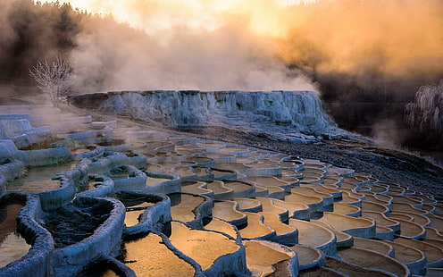
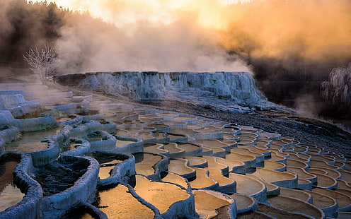

Pamukkale is a town in western Turkey known for the mineral-rich thermal waters flowing down white travertine terraces on a nearby hillside. Pamukkale has been a spa since the Romans built the spa city of Hierapolis around a sacred warm-water spring. The Antique Pool is still there, littered with marble columns from the Roman Temple of Apollo and you can swim in it as the Romans once did.